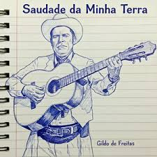

Quero ir na minha terra, quero matar a saudade
Quero ver o que eu não vejo, aqui dentro da cidade
Quero demorar bastante ficar lá o mês inteiro
Quero fazer toda lida, que eu fazia de primeiro
Quero domar potro xucro que há muito tempo eu não domo
Tomar um mate a meu gosto, que há muito tempo eu não tomo
Tomar um mate a meu gosto, que há muito tempo eu não tomo
Comer as frutas silvestres da mata da minha estância
Plantada por mão do mestre que comi na minha infância
Eu quero fazer de tudo se der certo o que desejo
Eu quero encerrar as vacas, tirar leite, fazer queijo
Fazer um laço de doze se esparramar no espaço
E cerrar nas guampas do bicho, pra mostrar que braço é braço
Quero camperear bastante, no lombo de bons cavalos
Carpir bastante de enxada, para as mãos criarem calos
Arrastar pipa de água na chincha do meu petiço
Para lembrar minha infância, e o meu primeiro serviço
Quero arranjar um gaiteiro e fazer um baile animado
E provar que eu sou herdeiro, da herança do passado
Pra provar que eu sou herdeiro, da herança do passado
Lavrar terra sem trator, pegar no rabo do arado
Pra bem da musculatura, cortar lenha de machado
E levar um retratista pra bater fotografia
E provar pra meus amigos, de tudo que eu lá fazia
Vou fazer acreditar quem nunca me acreditou
E outros ficarão sabendo, quem eu era e quem eu sou
E outros ficarão sabendo, quem eu era e quem eu sou
